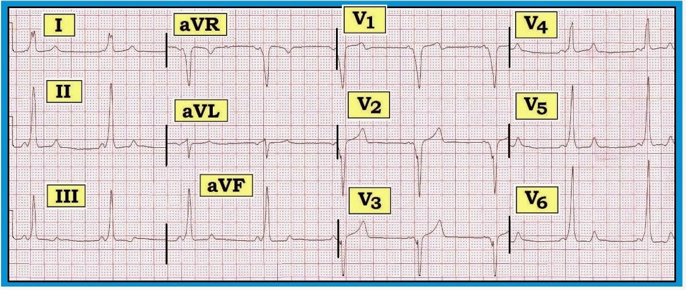
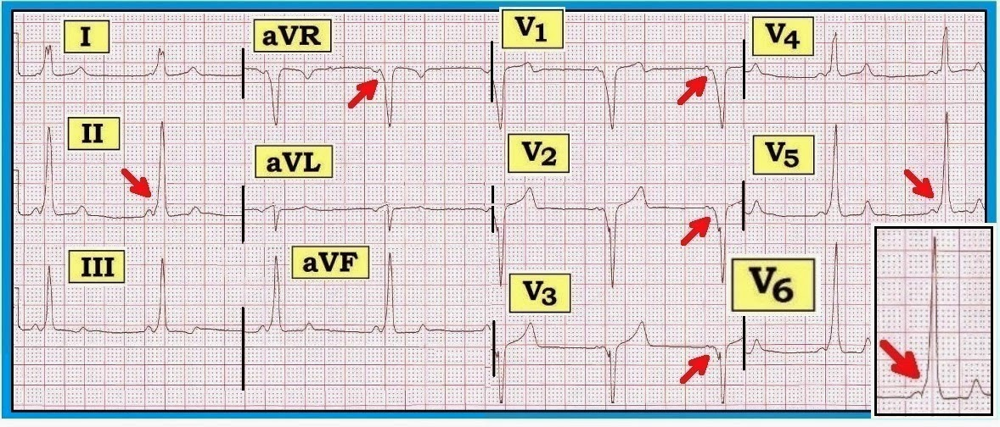
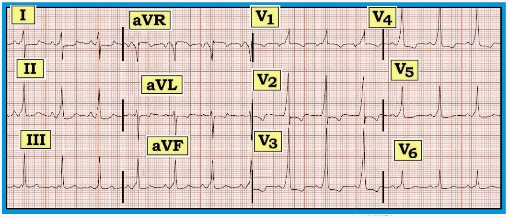

ECG Blog #76 — Định vị vấn đề?
Điện tâm đồ trong Hình 1 có cho thấy bằng chứng nhồi máu thành trước hay WPW?
- NẾU câu trả lời của bạn là WPW — đường phụ (AP — Accessory Pathway) có khả năng nằm ở đâu?
- Việc định vị AP trên điện tâm đồ có quan trọng về mặt lâm sàng không?


=================================================
Diễn giải Hình 1:
Điện tâm đồ trong Hình 1 cho thấy nhịp xoang (sóng P dương ở chuyển đạo II ) — nhưng khoảng PR ngắn. Xem kỹ hơn thấy có trát đậm ở phần đầu nhánh lên của sóng R, phù hợp với sóng delta ở nhiều chuyển đạo (mũi tên đỏ trong Hình 2). Bệnh nhân có WPW (Wolff-Parkinson-White). Chúng tôi nhấn mạnh các điểm sau:
- Cả 3 đặc điểm của WPW đều có mặt trong Hình 2. Đó là: i) khoảng PR ngắn; ii) QRS giãn rộng; và iii) sóng delta.
- Không phải chuyển đạo nào cũng thấy sóng delta. Ví dụ — không có sóng delta ở chuyển đạo aVL. Ở bệnh nhân WPW, không hiếm khi sóng delta chỉ thấy được ở một vài trong số 12 chuyển đạo. Hơn nữa, vì dẫn truyền có thể được chia sẻ giữa các xung đi qua AP (Accessory Pathway — đường phụ) và đường dẫn truyền bình thường qua nút AV — nên QRS không phải lúc nào cũng rộng như trong Hình 2.
- Ngoài sóng delta dương — còn có cả sóng delta âm trong Hình 2. Các sóng delta âm này ở các chuyển đạo V1,V2,V3 giả dạng nhồi máu thành trước.
- Điện tâm đồ trong Hình 2 cũng giả dạng LVH (do biên độ sóng R lớn ở V5,V6) và LBBB (phức bộ một pha, trát đậm ở chuyển đạo I). Tuy nhiên, vì bệnh nhân có WPW — không thể kết luận gì về khả năng nhồi máu thành trước, LVH hay LBBB. Thay vào đó — tất cả những gì ta có thể nói là có nhịp xoang kèm WPW.


=================================================
Làm thế nào Xác định Vị trí Có khả năng của AP?
Hình thái và hướng của sóng delta trên điện tâm đồ 12 chuyển đạo có thể giúp định vị chính xác một cách đáng ngạc nhiên AP (Accessory Pathway — đường phụ) ở bệnh nhân WPW. Điều này không chỉ mang tính học thuật đối với bác sĩ tim mạch điện sinh lý (EP) — vì nó giúp thuận lợi và rút ngắn thời gian định vị AP trong thăm dò EP (ElectroPhysiology — điện sinh lý). Ngoài ra — nó còn giúp lên kế hoạch thủ thuật cũng như trao đổi với bệnh nhân, vì nguy cơ của triệt đốt qua ống thông (catheter ablation) và tỷ lệ thành công dự kiến phụ thuộc một phần vào vị trí của AP.
- Chúng tôi nhấn mạnh rằng định vị AP trên điện tâm đồ là một chủ đề nâng cao, vượt quá nhu cầu lâm sàng của bác sĩ không chuyên tim mạch. Trên thực tế — chỉ cần nhận biết WPW và NẾU cần chuyển tuyến là đủ. Dù vậy — định vị AP trên điện tâm đồ không nhất thiết là khó nếu tuân theo một số tiêu chí nhất định.
Cách tiếp cận Tôi Đề xuất cho việc Định vị AP trên điện tâm đồ dựa trên sự tổng hợp của tôi từ tài liệu chủ yếu lấy từ 2 tài liệu tham khảo sau:
- Das MK, Zipes DP: Electrocardiography of Arrhythmias — A Comprehensive Review (sách ePub). Elsevier-Saunders, Philadelphia, 2012.
- Fitzpatrick AP Gonzales RP Scheinman MM, và cs.: Algorithm for the Localization of Accessory Atrioventricular Connections Using a Baseline Electrocardiogram. J Am Coll Cardiol 23:107-116, 1994.
=================================================
Những điểm Cơ bản về Định vị AP:
Định vị AP trên điện tâm đồ không hoàn hảo. Độ chính xác của định vị trên điện tâm đồ rõ ràng là kém tối ưu nếu mức tiền kích thích (preexcitation) chưa tối đa — như có thể xảy ra khi QRS chỉ giãn rộng tối thiểu vì một phần đáng kể quá trình hoạt hoá thất diễn ra do xung động truyền qua đường dẫn truyền bình thường qua nút AV.
- Phân bố ước tính của các vị trí AP như sau: i) Thành tự do bên (Left Ventricular — thất trái) — ~50% số AP; ii) Vùng sau vách (PosteroSeptal) phải hoặc trái — ~20%; iii) Thành tự do RV (Right Ventricular — thất phải) — ~20%; và iv) Vùng trước vách (AnteroSeptal) — ~10%.
- Đôi khi — nhiều hơn một AP có thể hiện diện ở cùng một bệnh nhân. Cùng với sự thay đổi về tỷ lệ tương đối giữa dẫn truyền qua AP so với qua đường bình thường — điều này có thể giải thích hình thái sóng delta thay đổi đôi khi thấy được từ bản điện tâm đồ này sang bản khác ở cùng một bệnh nhân.
- Theo quy tắc chung — NẾU sóng delta (~40 msec đầu của QRS) dương (hướng lên) ở chuyển đạo V1 (dạng RBBB) — thì đó là AP ở bên TRÁI (như trong Bước A-1).
- NẾU sóng delta hướng xuống (âm) ở chuyển đạo V1 (dạng LBBB) — thì theo quy tắc chung đó là AP ở bên PHẢI (Ngoại lệ chính là khi vùng chuyển tiếp nằm giữa chuyển đạo V1 và V2 — như mô tả trong Bước B-1).
=================================================
Bước A-1: NẾU QRS ở chuyển đạo V1 DƯƠNG hoàn toàn
Khi phức bộ QRS dương hoàn toàn ở chuyển đạo V1 — thì có “dạng RBBB”. Trong trường hợp này — vùng chuyển tiếp (nơi sóng R trở nên cao hơn sóng S) được coi là xảy ra trước hoặc ngay tại chuyển đạo V1. Điều này xác định một AP ở bên TRÁI. Tiến hành như sau:
- Tính tổng cực tính sóng delta ở 3 chuyển đạo thành dưới (II,III,aVF) — cho +1 điểm nếu delta (40 msec đầu của QRS) dương; 0 điểm nếu delta đẳng điện; và -1 điểm nếu delta âm.
- NẾU tổng cực tính các chuyển đạo thành dưới là +2 hoặc +3 = AP ở Thành tự do LV vùng Trước bên.
- NẾU tổng cực tính các chuyển đạo thành dưới nhỏ hơn +2 — thì AP nằm ở phía sau.
- NẾU tổng cực tính các chuyển đạo thành dưới là -2 hoặc -1 — và — sóng R ở chuyển đạo I lớn hơn sóng S ở chuyển đạo I ít nhất 0.8mV (8 mm) = AP Sau vách. Nếu không = đó là AP ở Thành tự do LV Sau bên.
-----------------------------------------------
Bước A-2: NẾU vùng chuyển tiếp nằm giữa chuyển đạo V1 và V2
NẾU sóng R ở chuyển đạo V1 nhỏ hơn sóng S ở V1 — nhưng đến chuyển đạo V2 sóng R trở nên cao hơn sóng S ở V2 (tức là, NẾU vùng chuyển tiếp nằm giữa V1 và V2) — thì AP có thể ở hoặc bên trái hoặc bên phải. Tiến hành như sau:
- NẾU sóng R ở chuyển đạo I lớn hơn sóng S ở chuyển đạo I chưa tới 1.0mV (10 mm) = thì đó là AP ở bên TRÁI. Trong trường hợp này — Tiến hành như trên (Bước A-1) cho trường hợp QRS DƯƠNG (bắt đầu bằng cách tính tổng cực tính delta ở các chuyển đạo thành dưới để xác định AP ở vùng trước bên — sau vách — hay sau bên).
- Nhưng NẾU sóng R ở chuyển đạo I lớn hơn sóng S ở chuyển đạo I ít nhất 1.0mV (10 mm) = thì đó là AP ở bên PHẢI. Trong trường hợp này — Tiến hành như mô tả trong Bước B-2.
-----------------------------------------------
Bước B-1: Làm sao biết NẾU AP ở bên PHẢI?
Khi phức bộ QRS chủ yếu hướng xuống (âm) ở chuyển đạo V1 — và — vùng chuyển tiếp (nơi sóng R trở nên cao hơn sóng S) xảy ra sau chuyển đạo V2 — thì đó là AP ở bên PHẢI.
- Như đã nói ở trên, cũng có thể có AP ở bên PHẢI — NẾU vùng chuyển tiếp nằm giữa V1 và V2 — và — sóng R ở chuyển đạo I lớn hơn sóng S ở chuyển đạo I ít nhất 1.0mV (10 mm).
-----------------------------------------------
Bước B-2: Khi AP ở bên PHẢI
Định vị một AP ở bên phải sẽ phụ thuộc vào vùng chuyển tiếp xảy ra ở đâu. Có 3 khả năng. Vùng chuyển tiếp có thể: i) trước (hoặc ngay tại) V2–V3 (Bước B-3); ii) giữa V3 và V4 (Bước B-4); hoặc iii) sau V4 (Bước B-5).
-----------------------------------------------
Bước B-3: AP ở bên phải: Vùng chuyển tiếp trước (hoặc ngay tại) V2–V3
NẾU AP ở bên phải với vùng chuyển tiếp trước (hoặc ngay tại) chuyển đạo V2–V3 — thì AP nằm ở Vách. Để xác định vùng vách nào có liên quan — Tiến hành như sau:
- Tính tổng cực tính sóng delta ở 3 chuyển đạo thành dưới (II,III,aVF) — cho +1 điểm nếu delta (40 msec đầu của QRS) dương; 0 điểm nếu delta đẳng điện; và -1 điểm nếu delta âm.
- NẾU tổng cực tính các chuyển đạo thành dưới là -2 hoặc -3 = AP Sau vách.
- NẾU tổng cực tính các chuyển đạo thành dưới là -1, 0 hoặc +1 = AP Giữa vách.
- NẾU tổng cực tính các chuyển đạo thành dưới là +2 hoặc +3 = AP Trước vách.
-----------------------------------------------
Bước B-4: AP ở bên phải: Vùng chuyển tiếp giữa V3 và V4
NẾU AP ở bên phải với vùng chuyển tiếp giữa chuyển đạo V3 và V4 — thì AP nằm hoặc ở vách hoặc ở thành tự do thất phải. Để xác định vị trí nào — Tiến hành như sau:
- Đo biên độ sóng delta (~40 msec đầu của QRS) ở chuyển đạo II.
- NẾU sóng delta ở chuyển đạo II ít nhất 1.0mV (10mm) = AP Vách. Để rồi tìm xem vùng vách nào có liên quan — Tiến hành như trên cho trường hợp vùng chuyển tiếp giữa V2 và V3 (Bước B-3).
- NẾU sóng delta ở chuyển đạo II nhỏ hơn 1.0mV (10mm) = AP Thành tự do RV. Để xác định NẾU AP nằm ở thành tự do RV trước bên hay sau bên — Tiến hành như dưới đây cho trường hợp vùng chuyển tiếp sau V4 (Bước B-5).
-----------------------------------------------
Bước B-5: AP ở bên phải: Vùng chuyển tiếp sau chuyển đạo V4
NẾU AP ở bên phải với vùng chuyển tiếp sau chuyển đạo V4 — thì AP nằm ở Thành tự do RV. Để xác định NẾU AP nằm ở thành tự do RV trước bên hay sau bên — Tiến hành như sau:
- Đo trục trán của sóng delta (xem cực tính sóng delta ở chuyển đạo I và aVF).
- NẾU trục trán của sóng delta dương (= lớn hơn 0 độ) = AP thành tự do RV trước bên .
- Nhưng NẾU trục trán của sóng delta âm (= nhỏ hơn 0 độ) — thì xem sóng R ở chuyển đạo III.
- NẾU trục trán sóng delta âm — và — sóng R ở chuyển đạo III có tổng dương = AP thành tự do RV trước bên .
- NẾU trục trán sóng delta âm — và — sóng R ở chuyển đạo III có tổng âm = AP thành tự do RV sau bên .
=================================================
Hình 3: AP có khả năng nằm ở đâu?
Hãy áp dụng cách tiếp cận định vị AP nêu trên cho điện tâm đồ ở Hình 2 mà chúng tôi trình bày lại trong Hình 3. AP có khả năng nằm ở đâu?

TRẢ LỜI cho Hình 3: AP ở đâu?
Chúng tôi bắt đầu bằng cách xem NẾU QRS ở chuyển đạo V1 của Hình 3 dương hay âm:
- Vì phức bộ QRS ở V1 âm — ta bỏ qua Bước A-1.
- Vùng chuyển tiếp (nơi sóng R ở các chuyển đạo trước tim trở nên cao hơn sóng S) không nằm giữa V1 và V2 — do đó ta cũng bỏ qua Bước A-2.
- Theo Bước B-1 — AP nằm ở bên phải (vì QRS âm ở V1 và vùng chuyển tiếp xảy ra sau chuyển đạo V2).
- Vùng chuyển tiếp nằm giữa V3 và V4. Do đó ta chuyển sang Bước B-4. Ta cần đo biên độ sóng delta ở chuyển đạo II. Nhận thấy rằng không phải lúc nào cũng dễ phân biệt chính xác điểm kết thúc của phần trát đậm thuộc sóng delta với phần hoà lẫn vào phần còn lại của QRS — có vẻ như có một sóng delta dương rõ rệt (ít nhất 10mm) ở chuyển đạo II. Điều này gợi ý vị trí Vách của AP.
- Để xác định phần vách có khả năng liên quan — Ta cần quay lại Bước B-3. Cực tính sóng delta rõ ràng dương ở mỗi chuyển đạo thành dưới — do đó chúng tôi nghi ngờ vị trí AP Trước vách.
=================================================
Hình 4: AP có khả năng nằm ở đâu?
Hãy áp dụng cách tiếp cận nêu trên cho ví dụ WPW trình bày trong Hình 4. AP có khả năng nằm ở đâu?


TRẢ LỜI cho Hình 4: AP ở đâu?
Chúng tôi bắt đầu bằng cách xem NẾU QRS ở chuyển đạo V1 của Hình 4 dương hay âm:
- Vì phức bộ QRS ở V1 dương — ta bắt đầu với Bước A-1. Vì QRS dương ở chuyển đạo V1 — ta đã biết mình đang xử lý một AP ở bên TRÁI.
- Tổng cực tính sóng delta ít nhất là +2 (sóng delta dương rõ rệt ở các chuyển đạo II,aVF — dù ở III chỉ dương rất ít, nếu không muốn nói là đẳng điện ở chuyển đạo này). Do đó — chúng tôi nghi ngờ AP ở Thành tự do LV Trước bên.
=================================================
Bình luận Của Tác giả: Cần hiểu rằng đã có nhiều thuật toán được đề xuất để định vị AP trên điện tâm đồ. Không thuật toán nào hoàn hảo — và “phép thử tối hậu” là định vị chính xác bằng thăm dò EP. Chúng tôi hy vọng cách tiếp cận đề xuất ở trên giúp bạn đơn giản hoá chủ đề này và hữu ích trong việc cho phép đưa ra một phỏng đoán có cơ sở nhanh chóng về vị trí AP dựa trên hình ảnh điện tâm đồ.
=================================================
Lời cảm ơn: Tôi xin cảm ơn Michael Frease đã cung cấp cho tôi điện tâm đồ trong Hình 4 và cho phép tôi công bố.
=================================================
- Để biết thêm thông tin – XEM:
- BẤM VÀO ĐÂY — để xem bản pdf Mục 05.36 của chúng tôi về WPW (trích từ ECG-2014-ePub).
- Để xem ví dụ về AFib rất nhanh với QRS rộng — Hãy xem ECG Blog #37 của chúng tôi.
=================================================